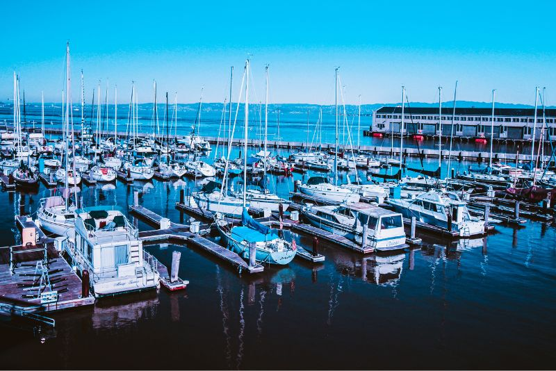

DESTACADO
FEAPDT celebrará su primer Congreso Nacional en Puerto Sotogrande
Un evento histórico que reunirá a todos los actores del sector náutico deportivo español para definir el futuro de las marinas.
Leer más